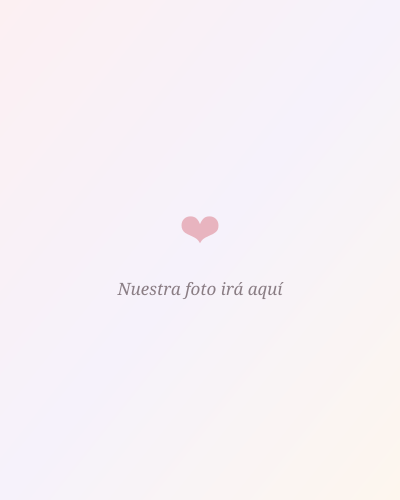

Feliz cumpleaños, al amor de mi vida.
Feliz cumpleaños al amor de mi vida.
Feliz cumpleaños, Mily. ❤️
Llevo varios días pensando en cómo hacer que este cumpleaños fuera diferente, porque una mujer como tú merece mucho más que un regalo material. Merece sentirse tan especial como me haces sentir a mí todos los días desde que formas parte de mi vida.
Por eso decidí hacerte este regalo. No porque crea que unas cuantas palabras puedan describir todo lo que siento por ti, sino porque quería regalarte un pedacito de mi corazón. Quería que, mientras lees esto, pudieras sentir todo el amor, la admiración y la felicidad que siento por tenerte en mi vida.
Hoy no solo cumple años la mujer que amo. Hoy cumple años la mujer más espectacular del mundo, la mujer que hace que cualquier momento sea mejor con solo estar presente, la mujer que llena de tranquilidad mi corazón y que me hace soñar con compartir una vida entera a su lado.
Ojalá este regalo consiga hacerte sonreír aunque sea una pequeña parte de todo lo que tú me haces sonreír a mí.
Feliz cumpleaños, mi Mora.
Gracias por estar en mi vida.
Hay algo que quiero agradecerte antes que cualquier otra cosa.
Gracias por estar en mi vida.
Nuestra historia no ha sido una línea recta. Hemos tenido momentos muy bonitos, otros difíciles e incluso un tiempo en el que nuestros caminos tomaron distancia.
Pero hay algo que nunca cambió para mí: nunca dejaste de ser importante.
Nunca dejaste de ocupar un lugar muy especial dentro de mi corazón.
Y hoy, mientras celebramos un año más de tu vida, no puedo evitar sonreír al pensar que la mujer con la que decidí que quiero caminar el resto de mi vida está cumpliendo años.
Me hace inmensamente feliz que nuestros caminos se hayan vuelto a encontrar.
Me hace feliz poder volver a imaginar un futuro contigo.
Y me hace todavía más feliz saber que hoy puedo decirte, con toda la tranquilidad de mi corazón, que no hay otro lugar donde quisiera estar que caminando a tu lado.
La mujer que más admiro.
Si alguien me preguntara qué es lo que más amo de ti, probablemente esperaría que respondiera hablando de tus ojos, de tu sonrisa o de lo hermosa que eres.
Pero la verdad es que lo primero que viene a mi mente es algo mucho más grande.
Te admiro.
Admiro a la mujer que sigue adelante incluso cuando las cosas parecen ponerse en su contra.
Admiro tu capacidad para levantarte una vez más cuando el camino se hace difícil.
Admiro la disciplina con la que luchas por tus metas.
La inteligencia con la que enfrentas los retos.
La perseverancia con la que sigues avanzando sin importar los obstáculos.
Me enamora saber que nunca te conformas, que siempre buscas aprender un poco más, mejorar un poco más y convertirte en una mejor versión de ti misma.
Y creo que una de las mayores fortunas de mi vida fue enamorarme de una mujer a la que admiro tanto.
Porque amarte es maravilloso.
Pero admirarte hace que cada día vuelva a elegirte con la misma ilusión.
Estoy orgulloso de ti.
Hay algo que quizá no te digo tan seguido como debería.
Estoy profundamente orgulloso de ti.
Orgulloso de la mujer en la que te has convertido.
Orgulloso de cada batalla que has enfrentado, incluso de aquellas que muchas veces solo tú conoces.
Sé que tu camino no ha sido sencillo. Sé que has tenido momentos difíciles, momentos en los que la vida te ha puesto pruebas que nadie debería tener que enfrentar. Y, aun así, aquí estás.
Sigues de pie.
Sigues luchando.
Sigues sonriendo.
Sigues construyendo un futuro para ti.
Eso es lo que más admiro.
Tu capacidad de levantarte una vez más cuando la vida parece querer detenerte.
Tu fuerza para seguir adelante incluso cuando las cosas no son fáciles.
Tus ganas de aprender, de crecer y de convertirte cada día en una mejor versión de ti misma.
Claro que me hará inmensamente feliz verte graduarte y celebrar todos los logros que sé que aún vienen para ti. Pero mi orgullo por ti no empezó con una carrera, ni depende de un título.
Estoy orgulloso de ti por la mujer que eres.
Por todo lo que has superado.
Por todo lo que has aprendido.
Y porque, después de todo lo que has vivido, sigues teniendo la valentía de mirar hacia adelante y seguir construyendo la vida que sueñas.
Eso, para mí, vale muchísimo más que cualquier diploma.
Y créeme cuando te digo que todos los días encuentro una razón nueva para sentirme orgulloso de llamarte mi mujer.
Nunca dejes que el mundo te haga olvidar quién eres.
Hay algo que quiero pedirte, no solo hoy que es tu cumpleaños, sino siempre.
Nunca permitas que las palabras de otras personas definan el valor que tienes.
Habrá quienes hablen sin conocerte de verdad.
Habrá quienes se queden con una pequeña parte de ti y crean que ya saben quién eres.
Habrá quienes no alcancen a ver todo lo bueno que llevas dentro.
Pero yo sí te conozco.
He conocido a la Mily que lucha, que se esfuerza, que se equivoca, que aprende, que vuelve a intentarlo y que nunca deja de avanzar.
Conozco tus virtudes y también conozco esos días en los que dudas de ti misma.
Y precisamente porque te conozco de verdad puedo decirte algo con toda la seguridad de mi corazón:
Eres una mujer increíble.
Nunca dejes que una opinión ajena haga más ruido que la voz de quienes realmente te conocemos y te amamos.
Porque yo nunca voy a dejar de creer en ti.
Nunca voy a dejar de sentirme orgulloso de la mujer que eres.
Mis sueños contigo.
Si alguien me preguntara cuál es mi lugar favorito en el mundo, creo que respondería algo muy sencillo: donde estés tú.
Porque desde hace mucho tiempo dejé de imaginar mis sueños solo. Ahora, cuando pienso en el futuro, inevitablemente apareces tú.
Sueño con el día en que por fin pueda tenerte frente a mí. Con poder tomar tus manos después de tanto tiempo imaginándolo, abrazarte sin tener que despedirme enseguida, darte un beso y comprobar que la realidad es todavía más bonita de lo que tantas veces he imaginado.
Sueño con caminar contigo sin prisa, conversar durante horas, reírnos por cualquier tontería, descubrir lugares nuevos y llenar nuestros celulares de fotos que algún día veremos sonriendo, recordando cómo empezó todo.
Sueño con esos momentos sencillos que para muchos pueden parecer pequeños, pero que para mí significan el mundo porque serían contigo.
Y lo más bonito de todos esos sueños es que ya no los veo como algo imposible. Cada día que pasa siento que estamos un paso más cerca de convertirlos en recuerdos.
Nuestro futuro.
Hay un pensamiento que, cada vez que aparece en mi cabeza, me hace sonreír sin darme cuenta.
Imaginar una vida contigo.
No una vida perfecta, porque sé que ninguna lo es. Imagino una vida real: con días buenos, con días difíciles, con metas compartidas, con aprendizajes y con la tranquilidad de saber que, pase lo que pase, estaremos uno al lado del otro.
Y hay algo que nunca antes había querido y ahora quiero con todas mis fuerzas: formar una familia contigo.
Tú eres la única persona que me ha hecho imaginarme siendo papá.
La única con la que he pensado, de verdad, en formar una familia.
La única con la que puedo imaginar un hogar lleno de amor, de risas y de recuerdos.
Cuando pienso en nuestros hijos, no pienso solo en tener una familia. Pienso en la inmensa felicidad que sentiría al saber que la mujer que amo también es la mamá de ellos.
Porque no puedo imaginar un mejor ejemplo de esfuerzo, inteligencia, fortaleza y amor para una familia que la mujer de la que me enamoré.
Si algún día la vida nos regala ese futuro, creo que voy a ser el hombre más feliz del mundo.
Porque ese futuro tendría algo que hoy ya hace mi presente mucho más bonito:
Te tendría a ti.
Gracias.
A veces me pongo a pensar en todas las cosas que quisiera agradecerte y me doy cuenta de que nunca terminaría.
Gracias por aparecer en mi vida.
Gracias por permanecer.
Gracias por volver.
Gracias por confiar en mí.
Gracias por permitirme conocerte de una forma que muy pocas personas tienen la fortuna de hacerlo.
Gracias por hacerme sentir escuchado.
Gracias por las conversaciones largas.
Gracias por las risas.
Gracias por esos pequeños momentos que quizá parecen normales, pero que para mí terminan convirtiéndose en recuerdos que guardo con muchísimo cariño.
Gracias por inspirarme a querer ser un mejor hombre.
Gracias por hacerme querer trabajar más, crecer más y construir un futuro del que ambos podamos sentirnos orgullosos.
Pero, sobre todo...
Gracias por ser tú.
Porque fue precisamente esa mujer, con sus virtudes, sus defectos, sus fortalezas y sus días difíciles, de quien me enamoré.
Y de quien sigo enamorándome cada día.
Todo lo que aún nos falta vivir.
¿Sabes qué es lo más bonito de nuestro futuro?
Que todavía está lleno de páginas en blanco.
Nos faltan muchísimas fotografías.
Muchísimos abrazos.
Muchísimos besos.
Muchísimos cumpleaños.
Muchísimas metas por celebrar.
Nos faltan viajes.
Nos faltan desayunos tranquilos un domingo.
Nos faltan noches viendo una película sin prestar demasiada atención porque estaremos hablando de cualquier otra cosa.
Nos faltan caminatas.
Nos faltan aniversarios.
Nos faltan muchísimas historias que algún día recordaremos riéndonos.
Y cuando pienso en todo eso, siento una emoción muy difícil de explicar.
Porque no imagino simplemente un futuro.
Imagino un futuro contigo.
Y eso hace que cualquier sueño sea todavía más bonito.
Si algún día dudas...
Hay algo que quiero que recuerdes siempre.
Habrá días buenos.
Y habrá días en los que quizá sientas que no eres suficiente.
Habrá momentos en los que las cosas no salgan como esperabas.
Habrá personas que opinen sin conocerte.
Pero cuando alguno de esos días llegue, quiero que recuerdes esto.
Yo sí te conozco.
Conozco a la mujer fuerte que hay detrás de cada sonrisa.
Conozco todo el esfuerzo que haces incluso cuando nadie lo ve.
Conozco tus miedos.
Tus sueños.
Tus ganas de salir adelante.
Y precisamente porque conozco todo eso puedo decirte algo con absoluta tranquilidad:
Creo en ti.
Siempre voy a creer en ti.
Incluso cuando tú misma dudes por un momento.
Hoy celebramos tu vida.
Hoy es tu cumpleaños.
Y puede parecer una fecha más en el calendario.
Pero para mí significa muchísimo.
Porque hoy hace unos años nació la mujer que cambiaría mi vida años después.
Hoy celebro que naciste y que me permitiste conocer el amor verdadero.
Hoy celebro que nació la mujer que me hace sonreír cuando pienso en el futuro.
Hoy celebro que nació la mujer con la que sueño construir una vida entera.
Y, aunque hoy el mundo entero pueda desearte un feliz cumpleaños, quiero que nunca olvides algo.
Nadie está más feliz de que existas que yo.
Gracias por cumplir un año más.
Gracias por seguir escribiendo tu historia.
Gracias por dejarme formar parte de ella.
Una promesa.
Mily...
Si después de leer todo esto hubiera una sola idea que quisiera que guardaras en tu corazón, sería esta:
Nunca voy a dejar de elegirte.
Nunca voy a dejar de admirarte.
Nunca voy a dejar de sentirme orgulloso de la mujer que eres.
Quiero seguir celebrando tus cumpleaños.
Quiero abrazarte cuando tengas un mal día.
Quiero seguir riéndome contigo por cualquier tontería.
Quiero seguir soñando contigo.
Quiero seguir construyendo recuerdos.
Quiero llenar nuestros celulares de fotografías.
Quiero ver cómo cumples cada una de las metas que te propones.
Quiero seguir enamorándome de ti una y otra vez.
Y, si la vida nos lo permite, quiero que dentro de muchos años podamos volver a abrir esta página, mirarnos y sonreír al recordar que todo esto comenzó como un pequeño regalo de cumpleaños.
Porque, al final, el verdadero regalo nunca fue esta página.
El verdadero regalo ha sido poder compartir mi vida con una mujer como tú.
Feliz cumpleaños, Mora.
Feliz cumpleaños, Bombón.
Feliz cumpleaños al amor de mi vida.
Te amo con todo mi corazón.

"La próxima foto que pongamos aquí... quiero que sea la primera de las miles que todavía nos faltan por tomar juntos."
Gracias por existir.
Gracias por hacerme tan feliz.
Espero que este haya sido apenas uno de los muchísimos cumpleaños que quiero celebrar contigo.
Te amo infinitamente.
"Hoy celebramos tu cumpleaños. Espero que algún día podamos celebrarlo tomados de la mano, riéndonos y recordando que todo esto empezó con un simple mensaje de 'Feliz cumpleaños'. Porque si hay un sueño que tengo claro, es seguir construyendo una vida contigo. Feliz cumpleaños, mi Mora. Te amo."